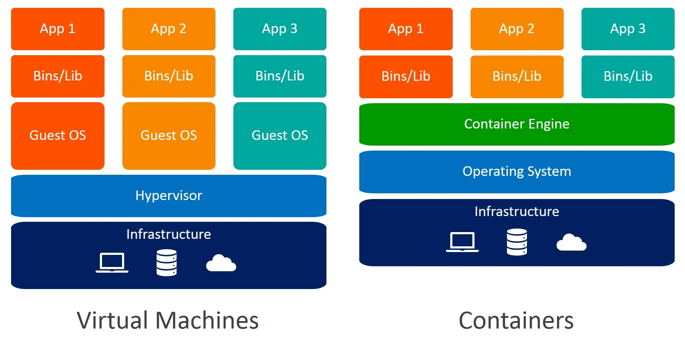

02. Cgroups 容器资源控制(DONE)#
Author by: 张柯帆，ZOMI
在上一篇关于容器隔离的文章中，我们详细介绍了实现“视图隔离”的核心技术——Namespace。其原理是通过修改进程的系统视图，让进程只能“看到”操作系统的部分资源，但这种视图层面的隔离终究是“障眼法”：对宿主机而言，这些“隔离进程”与其他进程并无本质区别，仍可能无限制抢占 CPU、内存等物理资源。若某一容器耗尽宿主机资源，会直接影响其他容器甚至宿主机本身，因此必须通过技术手段限制容器的资源使用——Linux 内核提供的Cgroups，正是解决这一问题的关键。

观察上图可发现：虚拟机方案通过Hypervisor组件模拟硬件，在虚拟化过程中间接实现了资源限制；而容器引擎（Container Engine）没有类似 Hypervisor 的硬件模拟能力，因此需依赖 Cgroups 完成资源管控。接下来，我们将从 Cgroups 的定义、版本、核心概念、使用方式等维度，全面解析其如何为容器提供资源隔离能力。
注：以下讨论基于 Linux
1. 什么是 Cgroups#
Cgroups 是 Linux 内核实现资源管控的核心机制，也是容器技术能够稳定运行的基础之一。本节将从定义、起源和核心功能三个维度，明确 Cgroups 的本质定位。
1.1 Cgroups 定义与起源#
Cgroups（全称为 Control Groups）是 Linux 内核提供的一种资源管理机制，其核心能力是：将系统中的进程及其子进程“分组”，按资源类别（如 CPU、内存）为不同进程组设定管控规则，最终形成统一的资源管理框架。
从发展历程来看，2006 年，Google 工程师发起该项目，最初命名为“进程容器（process containers）”，目标是实现进程级的资源限制；2008 年，该功能被合并至 Linux 2.6.24 内核，正式更名为 Cgroups；如今，Cgroups 已成为 Docker、Kubernetes 等容器技术，以及 systemd 等系统管理工具的底层依赖，是 Linux 生态中资源管控的“基础设施”。
简单来说，Cgroups 的核心价值是：为进程组提供“资源限制、统计、优先级控制”的标准化能力，让上层应用（如容器）无需关心内核细节，即可实现精细化资源管控。
1.2 Cgroups 四大功能#
Cgroups 通过四大核心能力，覆盖资源管控的全场景需求，具体如下：
资源限制（Resource Limiting）：为进程组设定资源使用上限。例如，限制某进程组的最大内存使用量，一旦超出上限，系统会触发 OOM（Out of Memory）Killer 机制，终止超限进程以保护其他资源；
优先级控制（Prioritization）：为不同进程组分配资源优先级。例如，为核心业务进程组分配更高的 CPU 时间片权重，或提升其磁盘 I/O 优先级，确保关键服务在资源紧张时仍能正常运行；
审计与统计（Accounting）：实时统计进程组的资源使用情况。例如，记录某进程组的 CPU 占用率、内存使用量、磁盘 I/O 次数等数据，为监控、计费等场景提供数据支撑；
进程控制（Control）：对进程组执行统一操作。例如，批量挂起、恢复某进程组内的所有进程，或限制进程组内的进程创建数量，防止“fork 炸弹”等恶意攻击。
2. Cgroups 两大版本#
Cgroups 随 Linux 内核迭代不断优化，目前主要存在 v1 和 v2 两个版本，两者在架构设计和功能支持上有显著差异。本节将对比两个版本的核心特点，以及当前的生态应用现状。
2.1 v1：多层级架构#
Cgroups v1 是首个稳定版本，目前仍被 Docker 等主流容器技术广泛使用，其核心设计是为每种资源创建独立层级（Hierarchy）：
层级与资源绑定：每种资源（如 CPU、内存）对应一个独立的层级，例如 CPU 管控对应
/sys/fs/cgroup/cpu/目录，内存管控对应/sys/fs/cgroup/memory/目录；进程组独立配置：若需同时限制某进程组的 CPU 和内存，需在两个层级下分别创建同名进程组，并将进程加入两个层级的进程组中；
这种设计的优势是“资源管控灵活”，但存在明显缺陷：
层级管理混乱：多资源管控时需维护多个层级，易出现配置不一致问题；
资源协调困难：无法统一协调不同资源的限制逻辑（如内存超限与 CPU 调度的联动）。
2.2 v2：统一层级架构#
为解决 v1 的缺陷，Cgroups v2 进行了架构重构，核心设计是单一统一层级（Unified Hierarchy）：
所有资源共享一个层级：CPU、内存、磁盘 I/O 等资源的管控，均在
/sys/fs/cgroup/目录下的统一层级中完成；进程组自动继承资源规则：若将进程加入某进程组（如
/sys/fs/cgroup/my-container/），该进程组关联的所有资源控制器（如 CPU、内存）会自动对其生效；
此外，Cgroups v2 还新增了“更可靠的进程追踪”“细粒度资源控制”等功能，例如支持基于“内存压力”动态调整进程优先级，或精确限制进程的“匿名页内存”使用量。
2.3 版本生态现状#
尽管 Cgroups v2 在设计和功能上优于 v1，但目前仍以 v1 为主流，原因如下：1）历史兼容性：大量现有工具（如 Docker、Kubernetes 旧版本）基于 v1 开发，迁移至 v2 需修改底层逻辑；2）生态成熟度：v1 的文档、问题解决方案更丰富，开发者对其认知度更高。
不过，随着 Linux 内核版本升级（Linux 5.4+已默认支持 v2），以及 Kubernetes 1.25+对 v2 的全面支持，Cgroups v2 正逐步成为主流，未来将全面替代 v1。
3. Cgroups 核心概念#
要理解 Cgroups 的工作原理，需先掌握“子系统、控制组、层级”三个核心概念——它们是 Cgroups 架构的基石，也是实现资源管控的逻辑基础。
3.1 三大核心概念解析#
Cgroups 的三个核心概念相互关联，共同构成资源管控的逻辑框架，具体定义如下：
子系统（Subsystem）：又称“资源控制器”，是 Cgroups 管控某类资源的最小单元。例如，
cpu子系统负责 CPU 资源管控，memory子系统负责内存资源管控，每个子系统对应一种特定资源；控制组（Control Group）：简称“Cgroup”，是进程的“分组单位”。一个控制组可包含多个进程，且可关联多个子系统（如同时关联
cpu和memory子系统），进程加入控制组后，会自动遵循该组的资源规则；层级（Hierarchy）：是控制组的“组织形式”，以树状结构管理多个控制组。子控制组会继承父控制组的资源规则，例如父控制组限制内存使用 1GB，子控制组的内存上限无法超过 1GB。
三者的关系为层级是控制组的组织框架，子系统是控制组的资源管控规则，进程通过加入控制组，间接遵循子系统的资源限制。
3.2 子系统与配置参数#
在容器场景中，常用的子系统包括cpu、memory、blkio、pids等，每个子系统通过特定配置参数实现资源管控。以下是各子系统的核心参数及使用场景：
cpu子系统
cpu子系统负责限制进程组的 CPU 使用，核心参数如下：
cpu.shares：相对权重参数，默认值为 1024。例如，进程组 A 的cpu.shares设为 1024，进程组 B 设为 512，在 CPU 资源紧张时，A 获得的 CPU 时间是 B 的 2 倍（资源充足时该参数不生效）；cpu.cfs_period_us与cpu.cfs_quota_us：绝对限制参数，需配合使用：cpu.cfs_period_us：CPU 调度周期（单位：微秒），默认值为 100000（即 100 毫秒）；cpu.cfs_quota_us：周期内最大 CPU 使用时间（单位：微秒）；
例如，将
cpu.cfs_period_us设为 100000、cpu.cfs_quota_us设为 50000，意味着该进程组每 100 毫秒最多使用 50 毫秒 CPU，相当于限制使用 0.5 个 CPU 核心。
memory子系统
memory子系统负责限制进程组的内存使用，核心参数如下：
memory.limit_in_bytes：内存使用硬限制，即进程组的最大内存使用量。例如，设为512M表示该组进程总内存使用不能超过 512MB，超出后系统触发 OOM Killer；memory.soft_limit_in_bytes：内存使用软限制，仅在系统内存紧张时生效。例如，设为256M时，若系统内存充足，进程组可使用超过 256MB 的内存；若内存紧张，内核会回收超出部分的内存。
blkio子系统
blkio子系统负责限制进程组对块设备（如硬盘、SSD）的 I/O 访问，核心参数如下：
blkio.throttle.read_bps_device/blkio.throttle.write_bps_device：限制块设备的读写速度（单位：字节/秒）。例如，echo "8:0 104857600" > blkio.throttle.write_bps_device表示限制对8:0（设备号）的写入速度为 100MB/s；blkio.throttle.read_iops_device/blkio.throttle.write_iops_device：限制块设备的读写 IOPS（单位：次/秒）。例如，echo "8:0 1000" > blkio.throttle.read_iops_device表示限制对8:0的读取 IOPS 为 1000 次/秒。
pids子系统
pids子系统负责限制进程组内的进程（含线程）创建数量，核心参数为pids.max：
例如，
echo "100" > pids.max表示该进程组内最多可创建 100 个进程，超出后无法创建新进程，可有效防止“fork 炸弹”等恶意攻击。
4. 如何使用 Cgroups#
Cgroups 通过“cgroupfs”特殊文件系统暴露给用户空间，用户可通过“读写文件”的方式配置 Cgroups。本节将分别介绍“手动操作 Cgroups”和“容器引擎中使用 Cgroups”两种场景，帮助理解其实际应用方式。
4.1 手动操作 Cgroups#
手动操作 Cgroups 的核心是“创建进程组→设置资源限制→加入进程”，以限制进程内存使用为例，具体步骤如下：
步骤 1：进入 memory 子系统目录
Cgroups 默认挂载于/sys/fs/cgroup/目录，memory 子系统对应/sys/fs/cgroup/memory/，执行以下命令进入该目录：
cd /sys/fs/cgroup/memory
步骤 2：创建进程组
通过mkdir命令创建名为my-container的进程组（系统会自动在该目录下生成 memory 子系统的所有配置文件）：
sudo mkdir my-container
步骤 3：设置资源限制
通过tee命令将内存限制（512MB）写入memory.limit_in_bytes配置文件：
# 限制该进程组的最大内存使用为 512MB
echo 512M | sudo tee my-container/memory.limit_in_bytes
步骤 4：将进程加入进程组
通过将进程 PID 写入tasks文件，将进程加入my-container进程组。例如，将当前 Shell 进程（PID 通过$$获取）加入该组：
# 将当前 Shell 进程加入 my-container 进程组
echo $$ | sudo tee my-container/tasks
加入后，当前 Shell 及后续在该 Shell 中启动的进程，均会受到“512MB 内存限制”的管控，若超出限制，系统会触发 OOM Killer 终止超限进程。
4.2 容器中 Cgroups 应用#
在实际容器场景中，用户无需手动操作 Cgroups——容器引擎（如 Docker）已封装 Cgroups 的配置逻辑，只需通过命令行参数即可设置资源限制。
例如，通过docker run命令创建 Nginx 容器，并限制其 CPU、内存、进程数量，具体命令如下：
docker run -d --name my-nginx \
--cpus="0.5" \ # 限制 CPU 使用为 0.5 个核心（对应 cpu.cfs_period_us=100000、cpu.cfs_quota_us=50000）
-m "512m" \ # 限制内存使用为 512MB（对应 memory.limit_in_bytes=536870912）
--pids-limit 100 \ # 限制进程数量为 100（对应 pids.max=100）
nginx
Docker 的底层逻辑是：创建容器时，自动在 Cgroups 各子系统下创建同名进程组，将容器内的所有进程加入该组，并根据用户参数设置对应的 Cgroups 配置文件，最终实现资源限制。
5. Cgroups 与 Namespace 的协同工作#
容器的“完整隔离”需依赖 Namespace 和 Cgroups 的协同——两者分别解决“视图隔离”和“资源隔离”问题，共同构建容器的独立运行环境。
5.1 解决不同维度隔离#
Namespace：解决“看得到”的问题，通过修改进程的系统视图，让容器内进程只能看到“专属资源”（如独立的 PID、网络栈、文件系统），但不限制资源使用量；
Cgroups：解决“用多少”的问题，通过为进程组设定资源上限，防止容器无限制抢占宿主机资源，确保多容器共存时的稳定性。
例如，某容器通过 PID Namespace 看到独立的 PID 树（容器内 PID=1 对应宿主机 PID=1234），同时通过 Cgroups 限制其 CPU 使用为 1 核、内存为 1GB——两者结合，既让容器“误以为独占系统”，又确保其不会影响其他容器。
5.2 容器隔离必要性#
若只有 Namespace 无 Cgroups：容器可无限制使用宿主机资源，某一容器耗尽 CPU 或内存后，会导致宿主机及其他容器崩溃；若只有 Cgroups 无 Namespace：容器内进程可看到宿主机的所有资源（如其他进程、网络设备），易出现进程冲突（如 PID 重复）或安全风险（如访问宿主机敏感文件）。
因此，Namespace 和 Cgroups 是容器隔离的“两大支柱”，只有两者协同，才能实现“安全、稳定、高效”的容器运行环境。
6. 总结与思考#
Cgroups 作为 Linux 内核的核心资源管控机制，通过“子系统、控制组、层级”三大概念，为容器提供了 CPU、内存、磁盘 I/O 等资源的精细化管控能力。在实际应用中，Cgroups 需与 Namespace 协同工作：前者限制资源使用量，后者构建独立视图，共同实现容器的完整隔离。
参考与引用#
https://labs.iximiuz.com/tutorials/controlling-process-resources-with-cgroups（Cgroups 实践教程）
https://segmentfault.com/a/1190000045052990（Cgroups v1 与 v2 对比解析）
https://www.kernel.org/doc/Documentation/cgroup-v2.txt（Linux Cgroups v2 官方文档）
https://man7.org/linux/man-pages/man7/cgroups.7.html（Cgroups 核心概念官方手册）